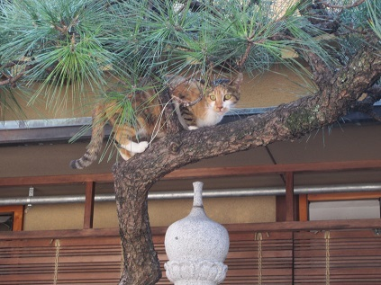

| シャムス教授の考古学入門４ 三宅教授の特別講義「古代におけるミルクの利用」 (知は力なり！シリーズ) | |
| 三宅 裕 & 三宅 美穂 | |
| etwas Neues (2016) | |
シャムス教授の考古学入門
三宅教授の特別講義「古代におけるミルクの利用」

考古学の世界へようこそ
- この本は横書きでレイアウトされています。
- また、ご覧になる環境により、表示の差が認められることがあります。
- 本作品では、ルビが（ ）内に表示されています。
三宅教授の特別講義
考古学の世界－古代におけるミルクの利用－
家畜のミルク利用
シャムス教授も連続講義のなかで少し触れられたかと思いますが、西アジアに起源をもつもののひとつに、家畜のミルク利用があります。それは、西アジアで始まった農耕とともに周辺地域へと広がっていき、やがてその範囲をも越えて、さらに広範な地域へと伝わっていきました。
西アジアに起源した農耕のことを私たちは「西アジア型農耕」と呼んでいます。オオムギやコムギ、いくつかのマメ類を栽培し、ヒツジ、ヤギ、ウシ、ブタの4種の家畜を飼育することが特徴です。これらの栽培植物と家畜を組み合わせた農耕は、今から1万年ほど前の新石器時代に始まったことが、さまざまな考古学的証拠から明らかになっています。ここでは、西アジア型農耕の中から発展した家畜のミルク利用について取り上げましょう。


なぜ家畜を飼うのか
そもそも、人は何のために家畜を飼うようになったのでしょうか。
私たちがまず思い浮かべるのは、その肉を食料にするためということでしょう。現代の西アジアではキャバブと呼ばれるヒツジの肉料理が最大のご馳走ですし、肉屋さんではレバーや胃などの内臓、豚足ならぬヒツジの足、はてはヒツジの頭までも売られています。

このように肉以外の部位も無駄なく利用するのが、牧畜文化の特徴です。しかし、家畜から得られる食料はこれだけではありません。私たちは発掘調査のために毎年のように西アジアに出かけますが、現地での食卓にはヨーグルトやチーズなどの乳製品がふんだんに登場します。これらの乳製品は、もちろん家畜から絞ったミルクが原料になっています。
街に出れば、チーズを中心に多種多様な乳製品が売られている光景に出合います。私たちにも馴染みのあるような種類もありますが、皮袋に入ったチーズ、三つ編みのような形をしたチーズ、カチカチでとても歯が立たないようなチーズなど、実にさまざまです。
今ではそれほど盛んではなくなってしまいましたが、家庭でも自家製の乳製品が造られています。
シリアの一般家庭でチーズ造りを観察する機会がありましたが、そのときにはレンネットと呼ばれる凝乳酵素が使われていました。レンネットは家畜の子どもの胃から抽出されたもので、それを生乳に加えるとタンパク質が固まって、チーズを造ることができるのです。今でも町の雑貨屋さんで、液状や錠剤状のレンネットを簡単に手に入れることができます。
財産としての家畜
私たちはともすると、家畜を飼っている人たちはいつでも自由に肉を食べられるのだろうと考えてしまいがちですが、実際にはそうではありません。家畜飼育は毎年継続的に繰り返されていく営みですので、家畜の再生産のサイクルを維持することがたいへん重要になります。
こうした家畜飼育のあり方は、現代の財団経営などと対比してみるとよく理解することができます。財団の運営は、最初に多額の寄付などを募って基金を集め、それを元手に運用益（利子）をあげて活動資金に充てています。
家畜飼育の場合には、手元に保有している家畜の群れが基金（元金）にあたり、これを大切に育てて子どもを産ませます。新たに生まれた子どもが利子ということになり、増えた分は肉として消費することができます。
しかし、生まれてくる子どもの数以上家畜を消費してしまうと、元金に手をつけたことになり、翌年に生まれる子どもの数が減ってしまいます。これを繰り返していると、家畜飼育の規模が縮小していき、最終的には破綻してしまうことになります。まさに、元も子もなくなってしまうのです。


ミルク利用の意義
西アジアで家畜化されたヒツジ、ヤギ、ウシ、ブタをみてみると、ブタ以外は毎年1回の出産で１頭の子を産む程度です。稀に双子が生まれることもありますが、家畜の数はそう簡単には増えてくれません。親の栄養状態が悪いと妊娠する割合は低下しますし、ほかにも高齢のため死んでしまう個体もあれば、病気や放牧中の事故などによって失われてしまう可能性もあります。
つまり、たくさんの家畜を飼っていたとしても、いつでも好きなだけ肉を食べられるわけではないのです。多産なブタは当てはまりませんが、それ以外の家畜は肉を利用する目的で飼育したとしても、あまり大きなメリットがあるとは言えないのです。
しかし、家畜のミルクを利用するようになると、このあり方が大きく変わってきます。ミルクを搾ったとしても家畜の数は減ることはありませんし、食料源として新たな利子を獲得したことになります。しかもミルクは大変栄養価が高く、それだけで生きていくことが可能な完全栄養食品と言われています。哺乳類の子どもが母乳だけで育っていくことを考えれば、すぐに納得することができるでしょう。
このように、ミルクの利用は家畜を飼育する意義を飛躍的に高めてくれる、魔法の杖のようなものなのです。実際、現代の西アジアで家畜のミルクが盛んに利用され、豊富な種類の乳製品が存在することは、その何よりもの証拠と言うことができます。
ミルク利用の歴史
家畜のミルク利用がかなり長い歴史をもっていることはよく知られています。その例としてよく挙げられるものに、イラク南部の遺跡から出土した、紀元前2500年頃の神殿の装飾があります。そこにはウシの搾乳の場面や乳製品を製造している場面が描かれているからです。
西アジアで家畜が飼育されるようになるのは紀元前8000年頃のことですから、図像や文字資料にみられたミルク利用の証拠との間には、5000年近いギャップがあります。
しかし、資料を丹念に集めていくと、この間を埋めてくれるような証拠もあることが分かります。バターを造るための「チャーン」と呼ばれる土器やチーズを造るための土器などです。チャーンは横長の容器で、紐で吊るすことができるようになっています。チーズ製造用と考えられている土器は、底が抜けていて器壁には小さな孔が多数あいている、かなり特徴的な形をしたものです。
さらに、最近では自然科学的な分析によって、ミルク利用の歴史に迫ることができるようになってきました。
土器を使って煮炊きをした際に、食べ物の成分が土器に滲み込み、それが残っていることがあることも分かってきました。最近では、分析の精度が向上したおかげで、その成分がミルクに由来するものなのか、肉に由来するものなのか判別できるようになったのです。
この分析によって、新石器時代の土器からもミルクに由来する脂質が検出され、これにより紀元前7000～6000年ごろには、すでにミルクの利用がおこなわれていたことが明らかになりました。
また、家畜が殺された年齢を調べて、家畜がどのような目的で飼育されていたのか明らかにしようという研究もあります。肉、ミルク、毛など、何を主に利用するかによって、雄をどの年齢のときに間引くのが最も効率的なのか変わってくるからです。家畜が殺された年齢は、骨や歯を詳しく調べることで分かります。と殺年齢を分析したところ、ミルクを利用していたことを示す特有のパターンが、新石器時代にも認められると主張されるようになっています。
こうした新しい研究の成果により、今では家畜飼育の開始とミルク利用の開始との間には、あまり大きな差がなかったと考えられるようになりました。
西アジア型農耕とミルク利用の伝播
西アジア型農耕は、その名の通り西アジアで始まった農耕ですが、今ではそれがかなり早い新石器時代のうちに、西アジアを越えて周辺の地域にまで広がっていったことが分かっています。西アジアからヨーロッパへの農耕の広がりは比較的よく調査されていて、地中海沿いのルートと内陸を経由する２つのルートがあったとみられています。
西アジアとヨーロッパの食文化は、パンを主食とし、同じ種類の家畜を飼い、その肉や乳製品を食べるなど、たいへんよく似ています。ヨーロッパの食を支えている農耕が西アジア起源であることを考えれば、それはむしろ当然と言えるかもしれません。でも、ビールやワイン、オリーブの栽培も西アジア起源だと言ったら、皆さんは驚かれるのではないでしょうか。どれもヨーロッパが本場だと思われているかもしれませんが、その歴史をさかのぼっていくと西アジアに行きつきます。チーズなどの乳製品もこれらとまったく同じなのです。
ヨーロッパの新石器時代の遺跡からは、西アジアから出土したチーズ製造用の土器と瓜二つのものが見つかっています。その土器を分析してみたところ、ミルクに由来する脂質が検出されたという報告が最近ありました。このことから西アジア型農耕がヨーロッパに広がっていったときには、家畜や栽培植物だけでなく、家畜のミルク利用も一緒にセットで伝わっていった可能性が高くなってきたと言えるのです。
まだヨーロッパほど調査は進んでいませんが、西アジア型農耕は中央アジア、パキスタンなどの南アジア、エジプトをはじめとする北東アフリカへも、同じように新石器時代のうちに広がっていったのではないかと考えられるようになっています。これらの地域の食文化も西アジアやヨーロッパとよく似ており、伝統的にミルクの利用も盛んな地域です。まだじゅうぶんな証拠があるわけではありませんが、これらの地域へも西アジア型農耕とともに家畜のミルク利用が広がっていった可能性は高いと考えています。
西アジアでのミルク利用が新石器時代にまで遡るのであれば、西アジア型農耕はかなり早い段階から、安定した優れた食糧生産システムとして確立されていたと評価できるようになります。ミルクの利用によって、家畜の生産力が大きく向上したと考えられるからです。多様な環境が広がるユーラシア大陸やアフリカ大陸など、広範な地域に西アジア型農耕が広がっていくことができたのは、早くから家畜のミルクを利用するようになったからこそと言えるのではないかと思います。
日本でのミルク利用の歴史
このように、西アジア型農耕と一緒に広がっていったものを「ミルクの第一次拡散」と呼びたいと思います。その後やや時間がかかりましたが、さらにそれを越えた地域にもミルクの利用は広がっていくことになります。
本来、牧畜文化とは縁が薄かった日本もそうした地域のひとつです。現代の日本に暮らす私たちは、ごく当り前のように乳製品を食べていますが、日本でミルクが利用されるようになったのはいつ頃のことなのでしょうか。ヨーグルト、バター、チーズなど、乳製品の名前がすべて片仮名であることを考えると、欧米の食文化からの影響が大きいと思えます。
これに関係するものとして、伊豆半島南端の下田にある玉泉寺の境内には「牛乳の碑」という石碑が建てられています。この地において日本で最初に牛乳が売買されたことを記念して、乳業会社が建てたもの、とのことです。
下田は江戸幕府が鎖国政策の転換を余儀なくされた際に外国に開いた港で、玉泉寺にはアメリカの総領事館が置かれることになりました。その初代総領事であったタウンゼント・ハリスが病気になったときに、近所の農家から牛乳を集めて飲み、無事回復したとの話が伝わっています。この石碑はそれに因んだものなのです。
ところが、日本におけるミルク利用の歴史はもっと古く、それよりも千年以上も遡ることが知られています。古代の文献史料には、善那使主（ぜんなのおみ）という渡来人の子孫が孝徳天皇に牛乳を献上したという記事があるからです。もしそれが史実ならば、７世紀半ばの大化改新（乙巳の変）の頃のことになります。
牛乳の売買についても、平城京の長屋王邸跡から出土した木簡に、この屋敷に牛乳を納めた人物に代金として米を支払ったことが記されています。これは8世紀前半、奈良時代初めのことです。
また、「蘇」という名の乳製品も、古代の文献史料にはよく登場します。文武４年（700年）の記事が最も古いものですが、その後も蘇を諸国から献上させる制度（「貢蘇制度」）に関する記録が残っています。実際にそうした制度があったことは、平城京から出土した木簡からも裏付けることができます。上総国、武蔵国、美濃国、三河国から蘇が送られてきたことを示す、荷札のようなものが見つかっているからです。
平安時代のミルク利用
このように、飛鳥時代や奈良時代には日本でもウシのミルクが利用されていました。それは平安時代になっても続いており、中央と地方の二本立ての体制によって支えられていたことも知られています。中央では「乳牛院」という役所が設けられ、いわば国の直轄事業として牛乳の生産を担当していました。この乳牛院は現在の北野天満宮辺りにあったことが分かっています。
また、乳牛院にウシを供給するため、大阪（摂津国）には味原牧（あじふのまき）という名の牧場が設けられ、毎年、母牛７頭、子牛７頭を養育して、平安京の乳牛院まで送るよう定められていました。かつてその地に牧場があったことは、「乳牛山大道寺」や「乳牛山教照寺」といった寺院の山号からも窺い知ることができます。
一方、地方では国司の監督の下、地元で生産した牛乳を原料に蘇を製造し、中央へと献上する「貢蘇制度」を支えていました。この制度の詳細は『延喜式』などの文献史料から知ることができますが、それによると諸国を６つのグループに分け、６年に一度当番制で蘇を造らせ、献上させていたようです。ということは、その当時日本の各地にはウシを飼うための牧場があったことになります。
「蘇」とは?
蘇とはどのような乳製品だったのでしょうか。平安時代に諸国から貢納された蘇は、左大臣・右大臣家で催される正月の祝宴のために、甘栗とともに朝廷から下賜されていたことが知られています。その様子を記した貴族の日記によると、乾杯の後にまずうどんが出され、次にご飯もの・汁物がふるまわれた後、舞いや踊りを挟んで最後に蘇が出されています。
『延喜式』には「生乳を熱していくと、その10分の1の量の蘇ができる」との記述がありますが、ごく短い記述であるため、蘇をめぐってはさまざまな意見が戦わされてきました。この『延喜式』の記述に則って、生乳を煮詰めていって造られた蘇が、「飛鳥の蘇」として奈良県の明日香で販売されています。
これは、蘇が日本独特の乳製品で、チーズの一種であるとする意見に従ったものと言えますが、ミルクを利用する文化は西アジアを起源として、東方へと広まったものであることを考えると、やはり東アジア的視野で検討する必要があると思います。
遊牧民の世界である草原地帯を経由して中国にまで伝わったミルク利用が、中国を手本にして国家の体制を整えようとしていた日本に、他のさまざまな制度とともに導入されたと考えた方が自然だからです。そうであるならば、蘇は中国の文献『斉民要術』にあるように、ミルクを加熱するとできる膜を集めた、脂肪分に富んだバターやクリームに近いものであったと考えられます。
逆回りからのミルク利用の伝播
奈良時代には整えられていた「貢蘇制度」は、平安時代後期には形骸化が進み、一般にはミルクの利用自体も鎌倉時代中頃には途絶えてしまったと言われています。実際には、その後もミルクの利用を窺わせるような文献史料が存在しますので、細々とですが継続していたようです。
しかし、それ以前と比べると大きく衰退してしまったことは明らかで、それは古代日本のミルク利用が庶民の生活に根ざしたものではなく、一部の特権階級のものとして国家によって導入されたものであったからだと言えるでしょう。
その後、日本でミルクの利用が再び盛んになるのは、前述した「牛乳の碑」にもあるように、幕末以降欧米の文化と接触をもつようになってからです。さらに広く普及するようになるのは、戦後の学校給食制度によるところが大きいと言われていますが、これは古代日本へのミルク利用の導入とは逆回りの、つまり西アジアからヨーロッパ、そしてアメリカへと広がった、西アジア型農耕を基本とする食文化の影響が、千年以上も後に再び日本に及ぶようになった結果であると言えるのです。
ご清聴ありがとうございました。

シャムス教授の発掘滞在体験談

これからお話するなかには、具体的な例もありますが、それはもしかしたら特別なことであって、そのときだけのことかもしれず、常にそうであることとは限りませんので、「ああ、あの地域ではそれが普通なのか」とは思わないでください。
西アジアあれこれ
ガイダンスで西アジアのだいたいの地域を示しましたが
現在は、残念ながら、地域によっては内紛などが起こり、なかなか行きづらい場所になってしまっています。この地域のなかでは、そうですね、ヨーロッパとアジアが出会う場所トルコのイスタンブールやカッパドキア、ヨルダンのローズ色岩石が美しいペトラなどは比較的よく知られていますので、旅行で行かれた方もいらっしゃるのではないでしょうか。
モスク

黒曜石
気候
西アジアと聞くと、砂漠を連想する方もいらっしゃるでしょうか。シリアの東部やヨルダンの東部と南部は砂漠もしくはそれに近い環境が広がっています。一年のうち夏を含む半年は乾季であり、ほとんど雨が降りませんが、冬は雨が降り、エジプトに近い南部を除けば、結構寒く、雪が降ることもあります。
言葉
トルコはトルコ語（東部では一部でクルド語）、シリアやヨルダンはアラビア語が使われています。言語は違っても、以前はどちらもアラビア文字表記でしたが、現在ではトルコ語はアルファベット表記になっています。
アラビア文字は見たことありますか？右から左へ書きます。とても美しいです。トルコ語はアルファベット表記になってからは左から右へ書かれるようになりました。地域が近く、文化も共通の部分があることなどから、同じかもしくは近い発音の単語が、トルコ語とアラビア語にはあります。多いのはアラビア語からトルコ語に入ってきたものです。
一例をあげますと、簡単な挨拶、こんにちは「メルハバ」（トルコ語）と「マルハバ」（アラビア語）、お茶「チャイ」、オリーブ「ゼイティン」（トルコ語）と「ゼイトゥーン」（アラビア語）、例えばという意味の「メセラ」（トルコ語）と「マサラン」（アラビア語）、本「キタップ」（トルコ語）と「キターブ」（アラビア語）、かばん「チャンタ」（トルコ語）と「シャンタ」（アラビア語）などを始め多くあります。
食事
こうした地域では、イスラム教が主流であることと関係するのですが、豚肉は食べられません。
日本で羊肉を食べたとき、好きになれないと思っていました。それがトルコでとても美味しい肉料理に出会い、それが羊肉だと知ったときは驚きでした。牛肉もありますが、羊以外では鶏肉がよく使われます。トルコやアラブ圏では丸く薄いパンが常に食事についてきますが、ご飯もよく食べます。ちなみに、ピラフはトルコ語です。
肉団子や具沢山スープのようなものの脇にご飯が添えられたり、鶏肉や野菜と一緒にスパイスをいれて炊いたご飯、キャベツやぶどうの葉でお米を巻いて煮る料理などもあり、美味しいです。お米も細長いものというより、日本のお米に近いような気がします。
講義のなかで三宅教授もおっしゃっていたように、乳製品は豊富にあります。ヨーグルトやチーズはかつて家庭で作られていたそうですが、最近はスーパーで購入されることの方が多いようです。
村で発掘作業をしていたときに、自家製のヨーグルトとチーズを差し入れていただいたことがありますが、今までに食べたヨーグルトやチーズの中で一番おいしいものでした。自家製でも味はさまざまなのでしょうが、さすが自慢の自家製品、忘れられない味となりました。
トルコの田舎では、近年、牛を飼うことが政府によって奨励されていまして、小さな家でも１、２頭の牛を飼っていることが多くみられます。
牛の他には、庭で鶏や七面鳥、アヒルやガチョウ、うさぎなどが歩き回っているのを見かけます。牛も子どもの頃は、犬のようにじゃれあいながら仲間同士で遊ぶことを初めて知りました。朝５時頃に発掘現場で作業の準備をし始める頃、ちょうど、各戸から牛たちがその家の人（小さな女の子がひとりのときもあります）にお尻をつつかれながら、村はずれの空き地まで連れて行かれます。まるで牛の出勤風景のようです。

大人の牛はのそのそと、こどもの牛は別の子牛と追っかけっこや体をぶつけ合って遊びながら、また河原で道草をしながら帰ってきます。たまに大人に「ちゃんと来なさ～い」（'モー'がそんな風に聞こえます）と叱られると、あわてて遊ぶのをやめて、大人を追っかけていきます。本当に大きな犬のような行動でした。日本では牛が身近なところを歩く姿など見られないので、楽しいやら不思議な世界を体験したような気になりました。
うさぎについては思い出深い出来事があります。シリアで調査をしていたとき、発掘調査のメンバーに動物考古学を研究している方がおりました。研究のためには、動物の骨格標本が必要で、現地の動物の骨を集めていました。羊や牛は肉屋から入手しましたが、当然、他の種類の動物も探していました。
ある日、うさぎを入手し標本にするまでの間、しばらく発掘宿舎の中庭で飼うことにしました。そのうち、宿舎に遊びに来ていた猫とも仲良しになり、また、ぼくたち調査メンバーも、仕事で疲れた合間に眺め、そのうさぎに愛着を感じるようになりました。ですから、殺してしまうのは可哀想だということで結局、うさぎは骨の標本として解体されることなく、みんなの心和むペットのような存在として飼い続けることになりました。
さて、発掘調査最終日、日本に帰らねばならなくなり、うさぎを放っておくことはできず、お隣さんに「可愛がってください、明日には日本へ帰ります」とうさぎを差し上げたのです。帰国準備に忙しくしていた夕方、そろそろ夕食の時刻というとき、そのお隣さんが挨拶に来てくださいました。そして、「元気でね」と夕食の一品にと唐揚げを持ってきてくれたのですが・・・。
そうです、ニコニコしたそのお隣さんは、自分だけがもらっては申し訳ないと、うさぎの唐揚げをわざわざ調理して、持ってきてくれたんです。ぼくたちのアラビア語が未熟であったせいなのか、うさぎをペットにするなんて思いもしないことだったのか、その優しいお隣さんの気持ちに感謝をしつつも、その唐揚げを囲んで、みんな無言、複雑な面持ちとなりました。良かれと思ってしたことが、うさぎさん、ごめんなさい。

大きい町では輸入品を含め広域のものが仕入れてあるので豊富な野菜を手に入れることができますが、発掘宿舎をおく田舎では、地元の野菜が中心となりますので、夏では、玉ネギ、トマト、キュウリ、ナスが市場にならびます。
他のものは、特に葉物はあまり見られません。ナスやオクラは紐に通して軒先や庭で乾燥させて保存食にされますし、売ってもいます。
果物もスイカ、メロン、リンゴ、ブドウ、モモ、イチジクなど、どれも味がしっかりしています。
村のあちらこちらに草で日差しを遮ってある簡単な建物の下に、大きな口をあけたピザ窯のようなものがあります。そう、パン焼き窯です。何軒かで共有して使っています。自家製のパンを家庭で作っているわけです。
お茶
「チャイ」という言葉はご存知の方も多いと思います。チャイラテなんて言葉は、日本のカフェでも目にしますよね。
チャイはお茶のことです。紅茶は西アジアでよく飲まれます。どこに行っても、人を訪ねて行くと、まず紅茶がでてきます。日本の茶托のようなものの上に10㎝にも満たない小さな縦長のガラスコップが乗り、コップの脇には角砂糖が添えられています。甘くして飲むんです。
発掘調査のはじめに考古局の役所に挨拶に行くと、３、４箇所の担当者に会うたびに挨拶もそこそこに「チャイ？」と聞かれ、どこでも好意を無下にできず飲みますが、最後にはお腹もゴボゴボになってしまいます。でもお茶を飲みながらのコミュニケーションが何よりも重要なのです。チャイを飲むのも大切な仕事のひとつと思っています。
役所でも企業でも大抵チャイ部屋があって（最近は減る傾向にありますが）、電話一本で配達のお兄さんがお盆にのせて持ってきてくれます。
近頃の傾向としては、健康志向が強くなり、若い層を中心にお砂糖なしの方が増えていますし、緑茶もポピュラーになってきています。紅茶の入れ方は、沸かしたお湯に茶葉をいれ、しばらく煮てから蒸らしますので、濃くなるのですが、それをお湯で割り、好みで濃さを調整します。どの家庭でもこうした紅茶を用意して、よく飲みます。
紅茶が普及したのは新しく、伝統的な飲み物としてはコーヒーがあります。アラブコーヒーとトルココーヒーがあります。アラブ圏でのトルココーヒーには、カルダモンという香辛料がコーヒーの粉に加えられて、煮出されますので、清涼感のある香りと味がします。これは、アラブコーヒーの影響でしょうか。
アラブコーヒーはコーヒー粉にカルダモンを合わせ、煮て、その上澄みをまた煮て作ります。アラブコーヒーは、最近では現地でも稀になってしまいましたが、ぼくがヨルダンの研究所にいたころは、所長室に行くと、まず秘書の方が、小型のポットにつめてあるアラブコーヒーをおちょこのような陶器製の小さな器に少量入れて渡してくれたものです。
お客が数人いるときには、その小さな器を３、４個重ねてもってきて、上から順々に入れて、次々と客人に渡します。飲み終わって、ぼけっとしていると、さらに注がれてしまいます。いらないときには注がれる前に器を揺らすと「もう結構です」という合図になり、器は回収されます。そして、その器は、コーヒーを待っている次のお客に渡され、飲み回されます。
とても濃い酸味の強いコーヒーで、暑いときにはさっぱりして美味しいものです。昔は各家庭で作っていたらしいのですが、友人宅では、「最近はコーヒー屋で買って、ポットにつめるのよ、時間がかかりすぎるから」とのこと。彼女自身は、自分で作ったことがなく、おばあちゃんやお母さんは作っていたと話してくれました。コーヒーも最近は、伝統的なコーヒーよりも、日本でもおなじみのインスタントのものが手軽によく飲まれているようです。
お茶、コーヒーの他に、ちょっと前までは、「ペプシ？ファンタ（オレンジ）？」が加わって、どれがいいか聞かれましたが、最近は「コーラ？」がペプシに勝ってしまったようです。
質疑応答タイム
三宅教授！
突然ですが、質問がたくさん届いています。ご回答よろしくお願いいたします！
質問その1
三宅教授、上から失礼します。搾ったミルクには雑菌が多かったと思うんですが、その処理はどうしてたんでしょうか。また保存法は？

マサシくん
マサシくん、ご指摘の通り、栄養価の高いミルクはいろいろな菌にとっても絶好の繁殖場所になります。ミルクが腐敗するのを防ぐ一般的な方法は煮沸して殺菌することですが、それでも冷蔵庫などなかった時代にはそれほど長く保存することはできなかったはずです。どんなに栄養価が高くてもすぐに腐ってしまっては、食料としてはあまり価値の高いものとは言えません。
そこで工夫されたのが、乳製品に加工することによって保存性を高めることだったと考えられます。ミルク利用が盛んになるためには、乳製品に加工する技術を確立させていることが前提になるとさえ言えると思います。
菌の中には人間にとって役に立つものも存在します。その代表的なものが乳酸菌です。乳酸菌は動物の乳房も含め、あらゆる場所に生育していると言われます。搾ったミルクを放置しておくと、どこからか混入した乳酸菌が繁殖を始め、その作用によってヨーグルトに近いものができあがります。こんなに簡単にできてしまうのですから、ヨーグルトは最初の乳製品であったとみられています。
それほど長くはありませんが、これで生乳よりも多少保存がきくようになります。ただ、最初に煮沸して殺菌してしまうと、乳酸菌まで殺してしまうことになりますので、すぐにヨーグルトができなくなってしまいます。そこで、そのような場合には前にヨーグルトを造った容器（乳酸菌が付着している）を利用したり、余ったヨーグルトを入れて乳酸菌の作用を促進させたりします。
チーズに加工すれば、ミルクはさらに長期間保存できるようになります。チーズはミルクに含まれるタンパク質を加熱したり、凝乳酵素を使って固めたものです。カマンベールのように軟らかいものもあれば、長期間熟成させた非常に硬質のものまで、実にさまざまな種類が存在します。長期間熟成させると次第に水分が失われ、保存性が高まります。
今でも西アジアで出会うことがありますが、チーズに塩をたくさん混ぜてよく乾燥させると、半永久的に保存のきくような乳製品ができあがります（さきほどの講義中に出てきた写真をごらんください）。ただし、たいへんしょっぱくて歯が立たないほど硬いものですので、そのままでは食べられません。お茶に溶かしたり、スープに入れるなどして食べられているようです。
そんなわけで、マサシくんも下におりてきてチーズ作り試してみてください！
質問その2
マサシくん、ご指摘の通り、ブタのミルクを利用している例はほとんど知られていません。ほぼ同じ時期に西アジアで家畜化されたのに、ミルクを利用する動物とそうでない動物が存在する。確かに不思議な気がします。私も最初は、ブタのミルクなんてまずくて飲めないからだろうと勝手に思っていました。
ミルクに含まれる栄養素は、脂肪、タンパク質、炭水化物（乳糖）が中心で（「三大栄養素」）、それにビタミンやミネラルも加わります（合わせて「五大栄養素」と呼ばれます）。講義の中でも触れましたが、こうした重要な栄養素がバランスよく含まれているため、完全栄養食品と言われるのです。
ミルクの栄養素の割合は、動物の種によって異なることが知られています。砂漠や冷たい海など、過酷な環境に生育する動物の乳は一般に脂肪の割合が高いことが知られています。それは素早くエネルギーに転換できる高脂肪のミルクの方が、生存に有利なためであると解釈されています。種による違いをすべて明確に説明することはできませんが、ブタのミルクの成分を調べてみると、ウシやヒツジ、ヤギなどよりも、むしろ人間のものに近いことが分かります。風味といった問題は残るかもしれませんが、栄養の成分からはブタのミルクが特異で人間が利用できなかったということは考えにくい状況にあります。何か別の理由があったと思われます。
私自身はブタのミルクが利用されないことには、家畜の利用やミルクの利用について考える上でたいへん重要な鍵が隠されていると考えています。ブタとそれ以外の家畜との違いは、いったいどこにあるのでしょうか。それは、ブタが多産な動物であることです。イノシシは年1回の出産で5頭ほどの子を産むと言われます。イノシシの子どもはウリボウなどと呼ばれ、母親の後をたくさんのウリボウがついて歩く姿を映像などでマサシくんも見たことがあるかと思います。
現代のブタは改良が進み、年平均で20頭近く子どもを産むとのデータがあります。出産の間隔も短くなっています。これもすべて、飼育者である人間がブタに対して強い圧力をかけているためです。家畜化された当初のブタの繁殖力は、イノシシと同じくらいだったと思いますが、それでも年1頭程度しか産まないほかの家畜と比べると5倍もの生産力があったことになります。
多産なブタは肉を利用するためには理想的ともいえる家畜で、多数生まれてくる子どもを大切に育てるだけで十分飼育する意味があったと考えられます。母親のミルクを無理に横取りするよりも、それをすべて子どもたちに与えることが優先されたと解釈できそうです。ただし、それも子豚を思いやってのことではなく、早く大きな肉の塊に育ってもらうためなのですから、あまり褒められたものではありません。
日頃のシャムス教授の教え方がいいからなのでしょうか。レベルの高い質問を連続でありがとう、マサシくん！
質問その3
蘇が送られたと木簡に書いてあった国は、今のどこに当たるのですか？
Mr.エドワード
Mr.エドワード、上総国は千葉県中部、武蔵国は東京都、埼玉県、神奈川県の一部、三河国は愛知県東部、美濃国は岐阜県南部にあたります。こんなに遠いところからはるばる奈良の都まで蘇を運んだのですから、さぞ大変なことだったと思います。
この「貢蘇制度」については、ほかにもいろいろと面白いことが分かっています。まず、蘇を運ぶにあたっては、「杉や檜製の箱ではなく、籠に入れて送るように」との指示が出されています。通気性のいい容器でないと問題があったのかもしれません。
また、各国の国司（今の県知事にほぼ相当）に対して、蘇の品質や納入時期が守られていないことを叱責する通達が何度も出されています。6年に1度のこととはいえ、この制度を支えるのは簡単なことではなかったようです。ついには、罰として杖叩きの刑（60回も）が導入され、それでも効果がなかったのか、位の剥奪（リストラ）や給料カットまで持ち出して国司たちを脅し、必死に貢蘇制度を守ろうとしていた様子がうかがえます。
乳製品でリストラ・・・よかったです、この時代じゃなくて！
質問その4
実は今まで、西アジア＝「遊牧民」というイメージが強かったのですが・・・遊牧民と農耕民の関係ってどうなのでしょう。もともと農耕に適さない場所に住む人びと（部族？）が、今も牧畜で暮らしているということ？
Ms.ナホコ（と、その取り巻きたち）
またまた、素晴らしい質問です。だんだん汗が出てきました。
Ms.ナホコ、遊牧民と農耕民は一見したところ対照的な生活を送っているように見えますので、両者は対立的な関係にあったとみるのが一般的かもしれません。楔形文字で書かれた古代の文献史料にも、遊牧民は都市に住む人びとを脅かす存在としてよく登場し、遊牧民を敵視するような記述も多くみられます。
もちろん、そのように時として敵対的な関係になることもあったとは思いますが、いつも水と油のような関係にあったと捉えてしまうと、西アジアの世界への理解が大きく狭まってしまいます。
遊牧民の問題は、西アジア型農耕や今回の講義のテーマであるミルク利用の問題と深く関係していると考えています。新石器時代まで視野に入れて考えてみると、遊牧民と農耕民は実は根っこのところで深くつながっていることが見えてきます。むしろ、「同じ穴の狢（むじな）」と言った方がいいかもしれません。
新石器時代に確立された西アジア型農耕の基本的な生活は、集落の周辺でムギやマメを育て、家畜は農地の外側へ放牧に出すという形がとられます。家畜の群れは夕方には集落に戻ってきますので、こうした放牧の形は「日帰り放牧」と呼ばれます。遊牧の始まりについてはいろいろな考えがありますが、私自身はこうした西アジア型農耕のあり方を基本として、そこから農耕（植物栽培）を欠落させて牧畜（家畜飼育）に特化したものが遊牧であると考えています。これまでに得られている考古学的資料も、特にこの考えに大きく反するような証拠はありません。
牧畜に特化した生活をおくるためには、ひとつ前提となる条件があったと思います。それこそが家畜のミルク利用です。講義の中でミルクを利用しない家畜飼育は非効率的で、生産力もあまり高くないと指摘しました。そうした状況のままで家畜の群れとともに荒野に出たとしても、おそらく生活としては成り立たなかったと思います。まず、日帰り放牧を続ける中でミルクの利用が確立され、それによって遊牧を営むための前提が整えられたのだと考えています。
遊牧民は荒野を彷徨う孤高の人びとであったのではなく、農耕民との関係もしっかりと維持しています。コムギをはじめとする農耕生産物などを入手する必要があるからですが、もっと驚くべき関係もあることが、現代の遊牧民を観察する中で明らかにされています。ひとつの家族、集団、集落、あるいは部族の中で、農耕を担当する人と遊牧を担当する人が存在し、一定の期間の後、その担当を交替する事例が珍しくないようなのです。去年農耕民だった人が、今年は遊牧民になっているということです。こうなると誰が農耕民で誰が遊牧民なのか分からなくなってしまいます。どうも遊牧民と農耕民の間の境はほとんどないか、非常に垣根の低いものであるようです。
ですから、私は遊牧民と農耕民の関係は、次のように考えた方がいいと思っています。農耕民は農地にできるような土地に定住し、遊牧民は農耕に向かない乾燥地や荒れ地に家畜の群れを連れて出ていきます。遊牧が始まる前はこうした土地はほとんど何も生産できない不毛の土地でしたが、植物を消化する能力に長けた家畜（反芻（すう）動物）を利用する遊牧によって、そうした土地でも食料（家畜の肉やミルク）の生産が可能になります。
これは、ある一定の範囲の土地から食料の生産量をできるだけ増やすための、分業体制の構築であると評価することができます。定住して農耕と牧畜に従事するグループと荒野で遊牧を営むグループに分かれれば、それ以前よりも生産力は大いに高まります。同じ家族同士（例えば兄と弟）、同じ親戚同士、同じ村の人同士、同じ部族の人同士が分業するのであれば、遊牧民と農耕民の間に密接な関係が保たれるのはむしろ当然のことと言うことができます。
「同じ穴の狢」とは、そのような意味で使ってみました。決してMs.ナホコのことではありません！
質問その5
「ろくに証拠もないのに何を言うか」と怒られてしまうかもしれませんが、先史時代にモンゴル周辺で独自に家畜化が始まったと言えるような証拠がまったくないこと、最近の遺伝子の解析によって中国のヒツジは西アジア起源であることが分かってきたからです。中国にヒツジがもたらされたのはモンゴルなどを経由した可能性が高いですから、モンゴルのヒツジも西アジア起源の可能性が高いと考えられるのです。
ただし、元々は西アジア起源だったとしても、それが広がっていった先で、ミルク利用の形が変化するということは大いにあったと考えられます。例えば、ミルクを搾る対象は西アジアで家畜化された動物にとどまりません。ミルク利用の文化から刺激を受けて、その地域で飼育されていた動物から搾乳するようになったと考えられます。
チベット周辺のヤクや極北地域のトナカイなどがこれに当たると思いますが、ウマの乳利用についてもそのように理解できる可能性はあります。トルコ系の牧畜民は比較的最近までウマの乳も利用し、馬乳酒も造っていました。彼らの故郷は中央アジアの草原地帯ですから、モンゴルも含めた東方の馬乳酒文化が、民族の移動に伴ってミルク利用発祥の地である西アジアにもたらされたことになります。
ジュンくん、（馬乳酒）飲んだら飛ぶな、飛ぶなら飲むな！お気をつけて。
質問その6
ハリーくん
そんなことはありませんよ、ハリーくん。西アジアでもバターは早くから造られていましたし、今でもよく利用されています。
ミルクの中に含まれる脂肪分は、やはり大切な栄養源だからです。先ほど紹介したチャーンという名の土器はバター造り用のものですし、最古の文字の中にもバターと思われる乳製品がみられます。講義の中で示した図の中にある「バターオイル」とは、インドのギーのようなもので、バターを加熱して水分を飛ばし保存性を高めた動物性脂肪のことです。
現代の西アジアでは一斗缶ぐらいの大きさの缶入りのものが売られており、トルコ料理やアラブ料理などでは調理用の油としてよく使用されています。西アジアに調査で行くと、現地の人からよく日本の料理についても質問を受けます。「脂っこくなく、さっぱりしている」と答えると、「脂の入っていない料理なんて、味気なくて食べる気がしない」という返事が返ってきたことがありました。
ハリーくんも一度バターオイル試してみてください。つやっつやになります！
質問その7
ウシ、ヒツジ、ヤギは収入が得られ、食糧にもなります。古い歴史のあるイヌやネコは役に立たなく（実用性がない）ても飼われてきました。家畜とペットが同じ空間でともに存在することが不思議なのですが。
ウルさん
身近にいるネコは、確かに飼い主を癒してくれるぐらいでしょうか、ウルさん。
考古学的な証拠によると、最初に家畜化された動物はイヌであったことが分かっています。人間のお墓にイヌが一緒に埋葬されている、両者の絆の深さを示すような例も見つかっています。イヌの場合は狩猟の際に活躍してくれますので、役に立たなかったとは言えないかもしれません。また、現代に知られる牧羊犬など、実際に生業に関わる大役を担っている場合もあります。
ただ、イヌの家畜化がその後の食料確保を目的とした家畜化とどう関係しているかについては、いろいろ議論があるところです。イヌが最初に家畜化されてから他の動物が家畜化されるまでに、数千年もかかっていることを考えると、ふたつの家畜化は分けて考えた方がいいという意見の方が多数派のように見えます。ただ、自分たち以外の動物もやり方によってはうまく手なずけることができるという実例として、イヌの家畜化の意味は大きかったと思います。
ネコの方は、ヤマネコとの区別がつきにくいこともあり、いつ頃から飼われるようになったかよく分かっていませんでした。西アジアでは地中海に浮かぶキプロス島において、今から１万年ほど前ごろに「ネコ」の骨や埋葬が確認されています。キプロス島にはヤマネコはいなかったようですので、この「ネコ」は周辺の地域から船で運ばれてきたことになります。
姿形はヤマネコとまだ変わりがありませんが、船で運ばれたり埋葬されていることからみて、飼われていた可能性が高いと考えられています。ねずみによる被害を防ぐために、船や醸造所などで猫が大事な役割を担ってきたことは知られていますから、その初期の例なのかもしれません。
役に立つかと言われれば・・・どうですか、シャムス教授。
あれ、まだ寝ているようですね
著者紹介
おつかれさまでした！
シャムス教授と学生たち
- File:Milk_glass.jpg 14:27, 9 November 2016(UTC) License=CC BY-SA 3.0 （ミルク）
- File:Cow_with_calf_dsc06514.jpg 14:28, 9 November 2016(UTC) License=CC BY-SA 3.0 （牛親子）
- File:Olive_groves_in_Syria.jpg 14:28, 9 November 2016(UTC) License=CC BY 3.0 DE （シリアオリーブ畑）
- File:Gyokusenji_temple_shimoda_2007-02-24.jpg 14:30, 9 November 2016(UTC) License=CC BY-SA 3.0 （ミルク）
- File:Kodai_no_So.JPG 14:30, 9 November 2016(UTC) License=CC BY-SA 3.0 （玉泉寺）
- File:Mosques_in_Istanbul_at_dusk.jpg 14:30, 9 November 2016(UTC) License=CC BY-SA 3.0 （蘇）
- File:Palace_Tomb,_Petra.jpg 14:31, 9 November 2016(UTC) License=CC BY-SA 3.0 （イスタンブールのモスク）
- File:Inside_the_Church_of_Hagia_Sophia.jpg 14:32, 9 November 2016(UTC) License=CC BY-SA 3.0 （ぺトラ遺跡）
- File:Ewe_sheep_black_and_white.jpg 14:32, 9 November 2016(UTC) License=CC BY-SA 2.0 （聖ソフィア大聖堂）
- File::A_cup_of_traditional_styled_tea,_Istanbul,_Turkey.JPG 14:33, 9 November 2016(UTC) License=CC BY-SA 3.0 （羊）
- File:Bak?rcezve-fincan.jpg 14:34, 9 November 2016(UTC) License=CC BY-SA 1.0 （赤角砂糖つき）
- File:Turkish_coffee_starting_to_boil.jpg 14:35, 9 November 2016(UTC) License=CC BY-SA 3.0 （トルココーヒー）
- File:Milk_glass.jpg 14:36, 9 November 2016(UTC) License=CC BY-SA 2.0 （ボイル中のコーヒー）
IFについて
2016年 ― 「もしわたしたちが一緒に何かを考えたら・・・」 シリアと日本、西と東のアジアの両端にあるふたつの国から、IFというサイトが誕生しました。読む人と書く人がお互いやりとりするなかで、物語、考え、趣味、意見などを世界中の人たちとシェアしながらの、読者参加型のサイトです。現在までに世界２００地域の人たちがアクセスしています。サイトでは英語を使っていますが、完璧な英語でなくてかまいません。ぜひ遊びにきて、皆さんのIFを教えてください。

―――――――――――――
- この図書は、デジタル配信用です。
- 本作品の内容あるいはデータを、全部・一部にかかわらず、無断で複製、転載、改ざん、改変、公衆送信（インターネット上への掲載を含む）することは、法律で禁止されています。また、個人的な使用を目的とする複製であっても、コピーガードなどの著作権保護技術を解除して行うことはできません。
Etwas Neues Booksのお知らせ


知は力なり！ シャムス教授の＜考古学入門＞シリーズ
カッツェン大学のシャムス教授がお贈りする「考古学」の魅力120％の入門書
楽しい質問やペットの写真を送ってくださった読者には、毎セクション１名にシャムス教授よりトートバッグのプレゼント！


＜以下、順次発刊予定です！お見逃しなく！＞
知は力なり！ ベンツ教授の＜英語で読む短編小説＞シリーズ


知は力なり！ ルーカス教授の＜エル・システマ入門＞シリーズ


知は力なり！ なつ教授の＜霊長類学入門＞シリーズ


＜順次発刊予定です！お見逃しなく！＞